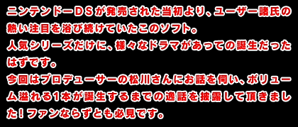
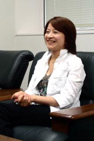
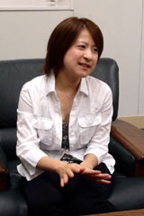

--シリーズ待望の続編ということで、ソフト誕生の経緯をお願いします。

松川：2004年７月くらいに、海外の現地法人社長から移植の依頼が来たのがそもそものスタートです。年末に新ハード(ＤＳ)が出るので、ＤＳで行こうと。なので、まずローカライズについての検討から入りました。海外の方は、わりとテキストを追っていくのが苦手という傾向がありまして、ここはタッチパネルを使えば直感的に遊んで頂けるのではないかと。うちの社長が、海外のマーケットでも積極的に挑戦していくべき、という考えを持っているのも手伝って、リリースが決定したんですね。
--じゃあ、国内版は予定外だったんですね。
松川：そうなんです。海外版を出す話が本決まりになった所で、「なんで海外だけで発売するんだ」という声が上がってきたんですね。やはり国内のファンの皆さんに育てて頂いたというのがあり、ありがたいことに本当に愛されているシリーズなんで、待って下さっている方が多くいらっしゃると。販売店の方々や出版社さん達からも「続き出さないんですか？」と言われたりしていたので、「国内でも出すか」で始まったんですよ。一話追加くらいでいいかな〜って。これが2004年の夏くらいですね。
--その後、どういう動きだったんでしょう。
松川：ローカライズの準備を進めていって、10月くらいには(ディレクターの)巧と合流して本格始動しました。ＤＳへプラットフォームを移すということは、遊び方を変えないといけないわけですから、タッチパネルをどう遊ばせるかといったことで相当考えました。ＧＢＡ版での操作性は、あれで完成された出来だったんです。必要最低限の操作で、シンプルにキッチリ進んで行く。でも、それを全部変えなくてはいけない。ということで、４回はシステムを作り替えた覚えがありますね。
--ＤＳになったからといって難解にするわけにはいきませんよね。
松川：そうです。見た目のインターフェイスがまず違う。ボタン＋サブ画面で情報を表示できる。そしてタッチパネル。逆転裁判ならではという制限を与えるのが、非常に難しかったです。このソフトは、「もともとゲームをしない人」に向けて、誰でも簡単に遊べるように作っていたので、ＤＳ版にするに当たって、操作性は相当考えました。
--追加シナリオについてはいかがですが。

松川：だいたい企画としてまとまったのが９月で、巧が「書くしかないね」と(笑)。題材としては「１」と「２」の中間ですね。で、その時は流れがスムーズだったんですが、いざ作ろうという段になってから巧が言うには「エンディング後の話を書くのに抵抗がある」と。でも、各話の間に別の話をねじ込む方が難しい。じゃあ御剣が居なくなる頃を入れたら、ユーザーさんに喜んで頂けるんじゃないか？ というやりとりがあって、第五話が完成しました。第五話はシリーズ最大のボリュームなんですよ。
--キャラクターの話になりますが、やっぱりキャラの立ち方がすごいですよね。
松川：被告人や犯人が居るんですけど、彼ら自体が憎めないですよね。真相を暴露するまでの間も、追いつめていくというより駆け引きを楽しんでいる感じです。キャラクターデザインは年明けから始まって、それまでにシナリオがほぼ完成していたんで、そこまでは順調でした。
--そこからは？
松川：色々な仕掛けをシナリオ内に組み込んでいくにあたって、例えば指紋検出とかルミノール反応とかがシナリオを阻害しないかと…。シナリオ進行を邪魔しない形で、いかに遊びを組み込んでいくかですごく悩みました。ゲームをあまりに難しくしてしまうと、逆転裁判らしくなくなってしまいますし。キャラクターはみんな派手なんですけど(笑)、ゲーム自体は非常にシンプルなのが特徴ですから、ＤＳとのバランスもあって着地点を探すのがとても難しかったですね。
|

--移植した部分はベタ移植なんですか？
松川：いえ、実は全話のサウンドやテキストのタイミングを調整しています。完成間近になって、調整かけていたのを知りました(笑)。巧が「当時はできなかった部分を、どうしても調整したかった。完全なテンポ・間合いを作りたい」って。「チェックかけなきゃいけないじゃん！」って怒りましたけど…結果的には良かったんでしょうね(笑)。あと、ダブルスロットにＧＢＡ版の「１」を差すと、最初から始めなくても第五話からスタートできるようになってますよ。けれど、ぜひ最初から遊んで頂きたいですね。
--マイクの使用についてお話を伺いたいんですが。
松川：ＤＳならではの面白さはこれが一番だろうと。開発チームはやっぱりマイクを使いたかったようですが、内部では議論がありました。(マイクが)なくてもゲームとしては成立しているのに、入れる必要があるのかと。巧は入れたくない派でしたね。だから、マイクの使用は絶対的に必要な要素ではなく、選べるようにしたんです。
マイク部分のシステムについては、任天堂さんに作って頂きました。マイクに関しては、このシステムを使ってゲームが１本作れるんじゃないかって思うくらいに面白い題材ですね。
--ローカライズはどうなったんでしょう？
松川：なるほどくんは海外版では"フェニックス・ライト"くんなんですが、ロス住まいってことになっています。あと、トノサマンは"スティール・サムライ"(笑)。国内のユーザーさんは、意外にもそういった変化を嫌がったりされませんでした。英語版を選択すると、海外版を楽しむことができますよ。ノリツッコミなんかの表現はそのまま移植できないので、方言なども含めてあちらの表現に変換してます。ただ、ネイティブ向けの英語が使われているので、やや難しいかも知れません。受験生の方はぜひこれでお勉強を！(笑)
--英語版が入って、シリーズ最大のボリュームが追加されて…というと、すごく盛りだくさんですよね。
松川：そうなんです。でも、やっぱりユーザーさんに大きく育てて頂いたものですから、喜んで頂きたいという気持ちがとても大きいんですよね。ストーリー的には殺人を扱ってるんですけど、重さを感じさせないような作りにしてますし、例えばキャラクター作りにも細かく力を入れてます。あるキャラのお弁当は20種類くらいありますしね。あと、御剣の部屋を作る日が来るとは思ってませんでした(笑)。そうそう、オマケ情報なんですけど、ポリゴンキャラになってる人がいます。あ、メインキャラじゃないんですけど。探してみて下さいね。
--松川さんご自身は、ゲームに対してどういう姿勢をお持ちなんでしょうか。
松川：私は元々、携帯ゲームに興味があるんです。現代の人って忙しくて、ＴＶの前でゲーム出来る人がどれだけ居るかと言えば、少ないと思うんですよ。そういうのもあって、どこででも遊べる携帯ゲームが作りたかった。メールを打つ感覚でゲームが出来てしまうっていうのは、すごいことですよね。携帯メールも、すぐ返事が返ってくると思うから打つんです。そのライブ感みたいなものが活かせるゲーム作りに、とっても興味がありますね。今後のゲーム界はまだまだ成長していくと考えています。
--では、最後にメッセージをお願いします。
松川：国内ユーザーの皆様、大変お待たせ致しました。ここまで育てて頂いた『逆転裁判』なので、無事に発売することができて嬉しいです。開発一同もホッとしています。隅々まで楽しんで頂けたら、本当に嬉しく思います。
--どうもありがとうございました！
|
|